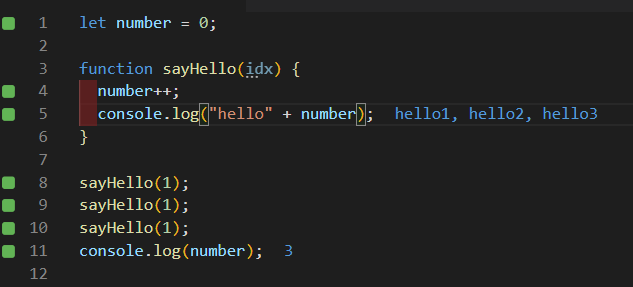

DAY21-常常有莫名其妙的bug嗎?要不要試試看pure function
DAY21-常常有莫名其妙的bug嗎?要不要試試看pure function
什麼是pure function
pure function不是一個手法，而是一個觀念
不論輸入幾次一樣的參數，永遠會得到一樣的結果，而且不會對函式以外的區域造成任何影響
也就是說，輸入一樣的東西永遠都會有一樣的結果，而且不會造成副作用。
不是pure function的反面例子
先來看看一個反面例子

連續呼叫三次 sayHello 的方法，都輸入同樣的參數 1 三次所得到的結果都不一樣，而且在sayHello方法外的變數 number 被修改成 3
更多不是pure function的反面例子
Javascript有很多內建的方法都不是pure function，舉幾個例子
- push
- shift
- unshift
- pop
push:從陣列最後新增元素
let numbers=[1,2,3,4]
numbers.push(1) //1,2,3,4,1
numbers.push(1) //1,2,3,4,1,1shift:從陣列最前刪除元素
let numbers=[1,2,3,4]
numbers.shift() //2,3,4
numbers.shift() //3,4
unshift:從陣列最前新增元素
let numbers=[1,2,3,4]
numbers.unshift(1) //1,1,2,3,4
numbers.unshift(1) //1,1,1,2,3,4pop:從陣列最後篩除元素
let numbers=[1,2,3,4]
numbers.pop() //1,2,3
numbers.pop() //1,2splice
如何寫pure function
- 不去修改方法外的變數
- 只使用參數來獲得資料
- 使用
return將結果返回
在這以簡單的加法功能為例，這是一個充滿副作用的加法功能
let a = 1;
let b = 2;
let result;
function add() {
result = a + b;
}
add(); //3遵守以上三個原則
function add(x, y) {
return x + y;
}
result = add(a, b); //3
result = add(a, b); //3
result = add(a, b); //3這兩個例子比較起來，可以看到:
- add方法內不會去修改外部參數result
- add方法，只使用參數x,y去操作
- 最後將結果用return返回，確保輸入同樣參數都會獲得同樣結果。因此
add(a, b)這個方法無論呼叫幾次，結果都會一樣
pure function有甚麼好處
- 無副作用:作用方法只限定在方法內，不會影響到其他的地方
- 可預測結果:同樣的輸入都會得到同樣的結果，也利於測試
- 易於組合:因為功能單一，無副作用，所以可以跟其他的pure function組合
例如我想要求下列陣列中的數字乘二相加之後的結果，就可以用不同的方法組合起來
const source = ["apple", "banana", 2, 4, 'hohoho', 888, '11', 'doraenom'];
let total = source
.filter(e => !!Number(e))
.map(x => Number(x) * 2)
.reduce((total, value) => total + value)https://medium.com/frochu/純粹的好-pure-function-知道-574d5c0d7819